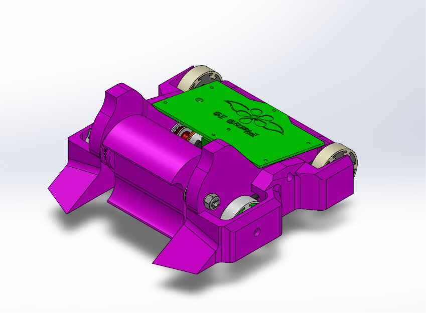
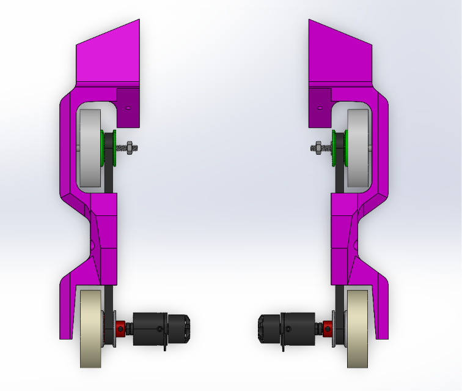

Built as part of the Watbots Student Design Team for the "Wreckage at the Rex" competition. I was responsible for the drive system and designing the wedgelets at the front of the robot. I worked through key decisions like wheel size, pulley tooth count, belt sizing, and wheel spacing to get the robot moving reliably within the antweight class constraints.
The robot performed solidly overall, finishing the competition with 2 wins and 2 losses.



The wedgelets at the front were designed to get underneath opposing robots, both to help flip them and to keep them away from our own weapon and drive system during close-contact exchanges. Their angle and placement were driven directly by this defensive-and-offensive dual purpose, rather than just aesthetics.
For the drive system, I started by settling on the robot's approximate overall size and weight (within the antweight class limit), then worked backward to determine wheel size, pulley tooth count, and belt sizing that would fit within that footprint while keeping the robot reliably mobile.